This is AdRaze Browser.
Ads are stopped before they load.
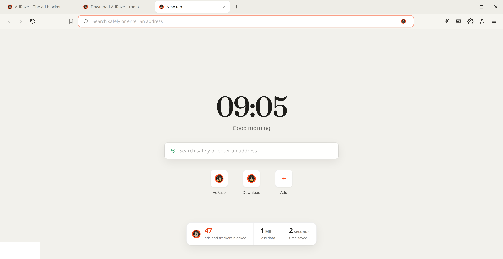
a real screenshot
Same browser. Five looks.

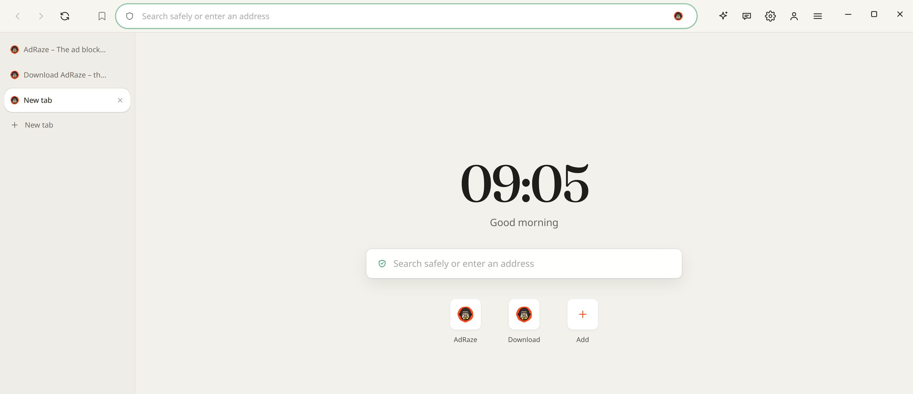
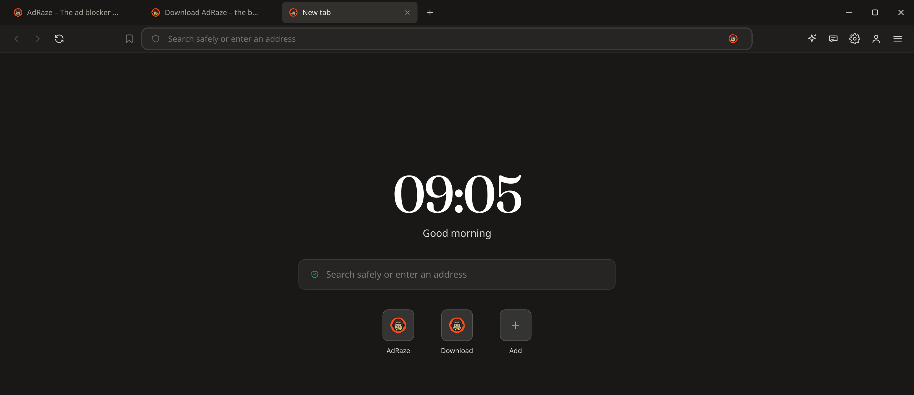
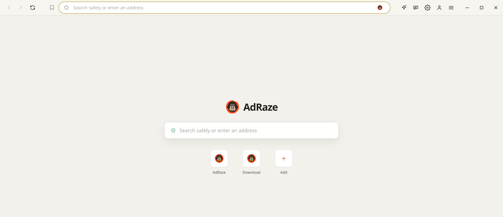
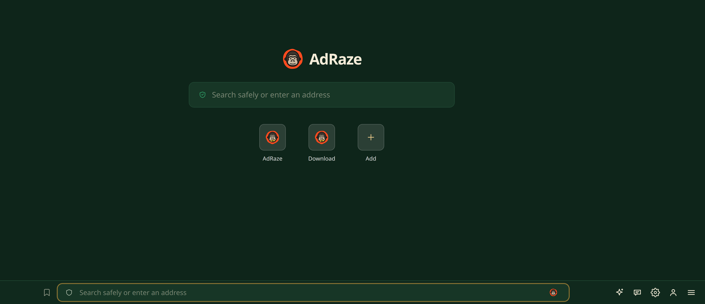
1 tabs on top
2 tabs on the side
3 dark
4 hidden tabs
5 bar atthe bottom
Or just ask Falk.
One sentence. New look.
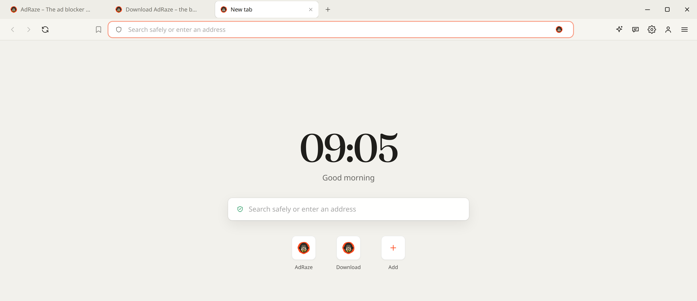
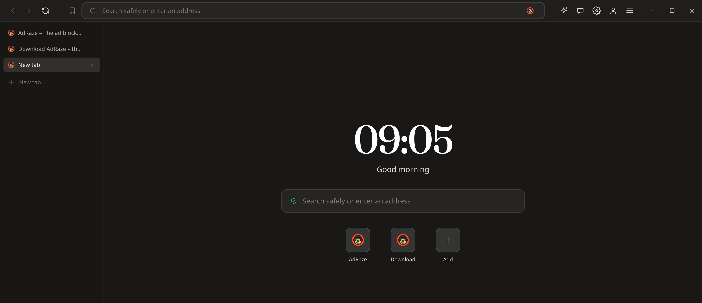
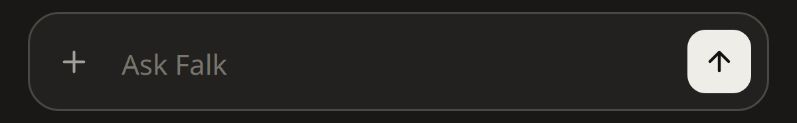
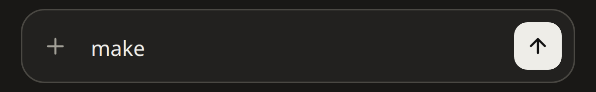
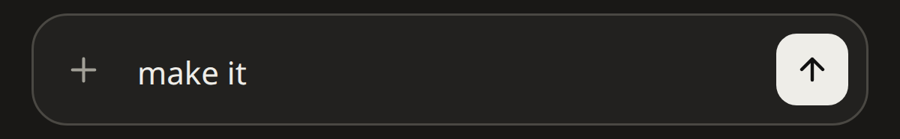
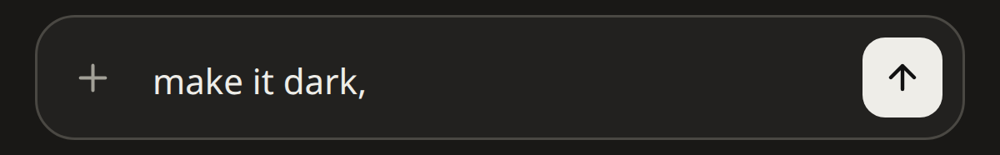
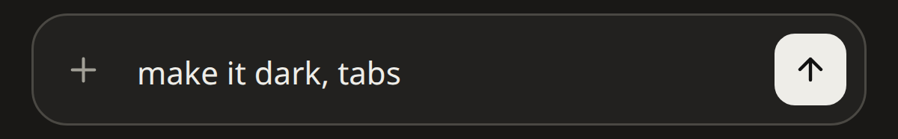
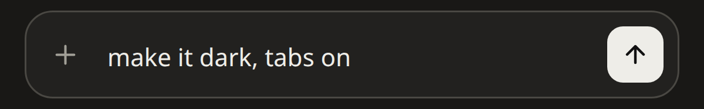
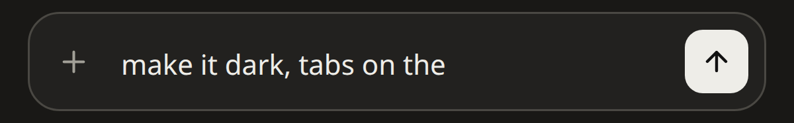
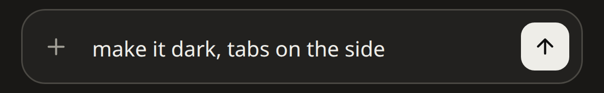
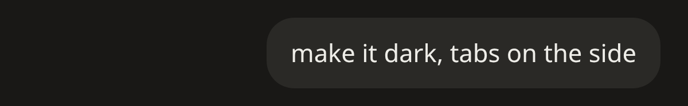
Family: open, not spying.
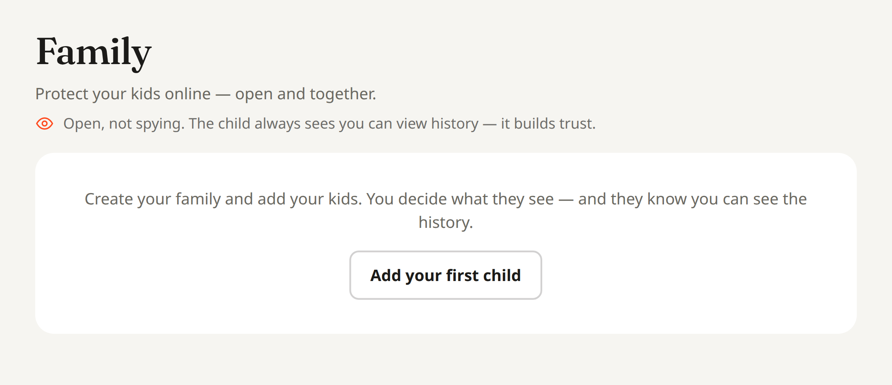